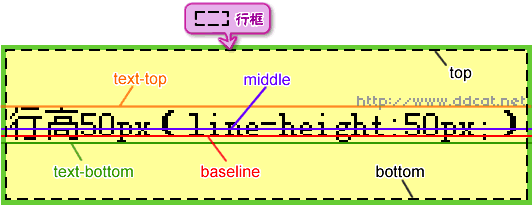
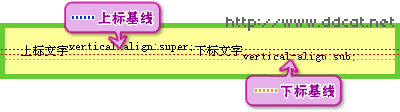

【CSS-task5】
介绍line-height与vertical-align
分享人：刘明
2.line-height基本概念
行高是指文本行基线baseline之间的垂直距离

1.line-height：20px 设置固定的行高
2.line-height：1.5 或 150%行高是font-size的1.5倍
3.vertical-align基本概念与应用
vertical-align 用来实现inline或table-cell的垂直对齐
(1)默认值baseline:元素基线与父元素基线对齐
(2)相对于父元素来说的: text-top(元素顶端与父元素字体顶端对齐) text-bottom sub super middle length percentage
(3)相对于整行来说的：top(元素的顶端与整行的顶端对齐) bottom
行框：是指本行的一个虚拟的矩形框，由行内框组成 (每个元素都会生成一个行内框，其高度等于font-siz)，行框高度是本行所有行内框高度最大值
super 使元素的基线相对于基准元素的基线升高
sub使元素的基线降低。移动的幅度由浏览器决定
length和percentage可以使元素的基线相对于基准元素移动
与上下标不同，这2个属性可以精确控制文字上下移动的幅度
4.常见问题与应用
line-height的继承：如字体大小20px，line-height：150%，不论子元素的字体多大行高都是30px，继承的是结果
line-height:1.5,继承的是倍数，子元素重新计算行高
line-height可以用于单行文字垂直居中
5.参考文献
参考一：MDN
鸣谢
感谢大家观看
BY : 刘明 | somebody